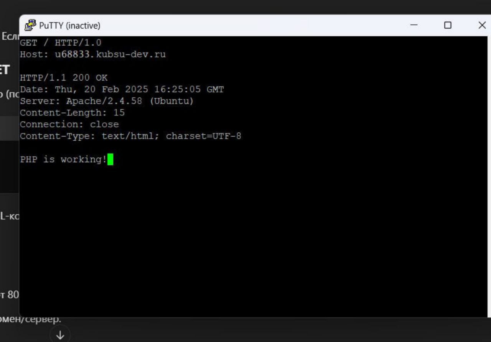

1) Получим главную страницу методом GET в протоколе HTTP 1.0 (HTTP/1.0 — это первая широко используемая версия протокола HTTP)

2) Получим внутреннюю страницу методом GET в протоколе HTTP 1.1 (HTTP/1.1 — это усовершенствованная версия протокола HTTP. Главное отличие от HTTP/1.0: в HTTP/1.1 Host: обязателен!) Метод GET в HTTP используется для запроса данных с сервера.
 3) Определим размер файла file.tar.gz Метод HEAD используется для получения заголовков HTTP-ответа без передачи тела ответа. Он помогает:
• Проверить существование ресурса
• Узнать размер файла (Content-Length)
• Определить медиатип (Content-Type).
3) Определим размер файла file.tar.gz Метод HEAD используется для получения заголовков HTTP-ответа без передачи тела ответа. Он помогает:
• Проверить существование ресурса
• Узнать размер файла (Content-Length)
• Определить медиатип (Content-Type).
 4) Определим медиатип ресурса /image.png
4) Определим медиатип ресурса /image.png
 5) Отправим комментарий на сервер по адресу /index.php Метод POST отправляет данные на сервер для создания или изменения ресурса
5) Отправим комментарий на сервер по адресу /index.php Метод POST отправляет данные на сервер для создания или изменения ресурса
 6) Получим первые 100 байт файла /file.tar.gz
6) Получим первые 100 байт файла /file.tar.gz
 7) Определим кодировку ресурса /index.php
7) Определим кодировку ресурса /index.php